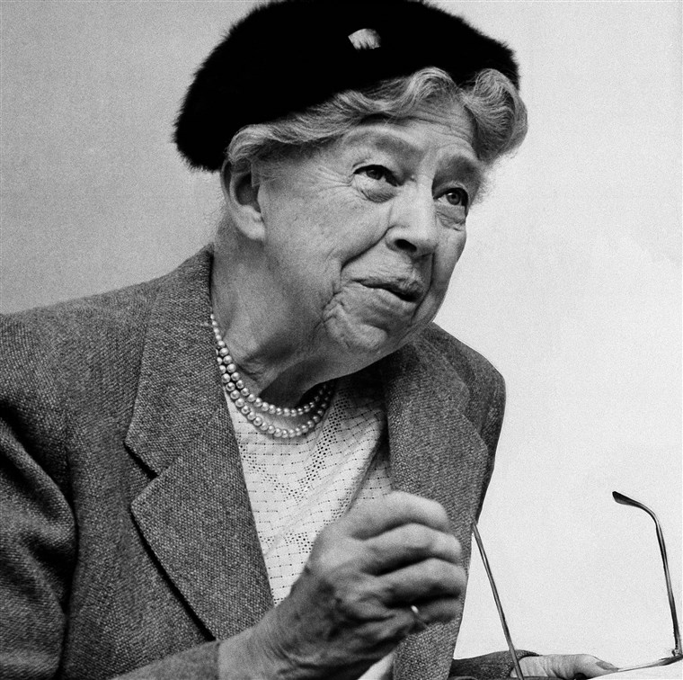

Eleanor Roosevelt
"One's philosophy is not best expressed in words; it is expressed in the choices one makes... and the choices we make are ultimately our responsibility." - Eleanor Roosevelt

Eleanor Roosevelt
Eleanor Roosevelt's Timeline:
- 1884 - On October 11, Eleanor Roosevelt was born in New York City.
- 1899 - Eleanor enrolls at Allenswood School in England.
- 1901 - Six month after his second inauguration, President Mckinely was assassinated. Eleanor's uncle, Theodore "Teddy" Roosevelt, assumes presidency.
- 1902 - Eleanor leaves Allenswood and makes a society debut at Waldorf-Astoria Hotel in New York City.
- 1903 - Eleanor is engaged with Franklin Delano Roosevelt, her fifth cousin once removed.
- 1905 - On March 17, Eleanor marries Franklin D. Roosevelt (FDR) in New York.
- 1906 - On May 3, Eleanor's first child, Anna, is born
- 1907 - On December 23, Eleanor's second child, James, is born.
- 1909 - On March 18, Eleanor's third child, Franklin Jr., is born. He soon dies of influenza.
- 1910 - On September 23, Eleanor's fourth child, Elliot, is born.
- 1912 - Eleanor attends her first firsth Democratic Party Convention.
- 1913 - Eleanor hires Lucy Mercer as her social secretary.
- 1914 - On August 17, Eleanor's fifth child, Franklin Jr. World War I breaks out in Europe.
- 1917 - On March 17, Eleanor gives birth to sixth and last child, John.
- 1917 - United States Of America enters World War I.
- 1918 - Eleanor discovers the affair between her husband and Lucy Mercer.
- 1919 - Eleanor volunteers at St. Elizabeth Hospital in order to visit World War I veterans. She also volunteers at the International Congress of Working Women in Washington.
- 1920 - Eleanor travels with FDR on his campaign trail for his vice presidency. She becomes friends with Louis Howe and joins the League of Women Voters.
- 1921 - Franklin becomes paralyzed from polio.
- 1929 - On October 24, the New York Stock Exchange crashes.
- 1932 - Franklin D. Roosevelt Is elected as the president of the United States.
- 1933 - On March 6, Eleanor hols the first all-women female conferece as the first wife of a president. She also asists with Arthurdale homestead project for the coal miners in West Virginia. FDR implements the New Deal.
- 1935 - Eleanor has a meeting with FDR, James Farley (head of the Democratic National Commitee), and Molly Dewson (head of the Women's Division of the DNC) to discuss the role of the women in political elections.
- 1936 - FDR wins re-election.
- 1939 - Eleanor defies segregation laws by sitting between whites and blacks at the Southern Conference for Human Welfare in Birmingham, Alabama.Hitler invades Poland and war breaks out in Europe.
- 1940 - On July 17, Eleanor has an impromptu speech at the Democratic National Convention and helps FDR win a third term in office.
- 1941 - On July 17, Japan bombs Pearl Harbor and the United States of America enters World War II.
- 1943 - Eleanor tours the South Pacific to boost the soldiers' morale.
- 1945 - Eleanor influences the Army Nurse Corps to open membership to black women and joins the NAACP board of directors. On April 12, FDR dies. On September 2, Japan surrenders and World War II ends.
- 1946- Eleanor is elcted as the head of the United Nations Human Rights Commission and begins the to draft the Declaration of Human Rights.
- 1948 - On December 10, the Human Rights Declation is passed by the United Nations.
- 1952- Eleanor resigns from the United Nations.
- 1957 - Eleanor visits the Soviet Union as a representative of the New York Post and meets Nikita Khrushchev.
- 1960 - Eleanor supports John F. Kennedy's (JFK) presidential campaign.
- 1961 - Eleanor is reappointed to the United Nations as chair of the President's Commision on the Statis of Women by JFK.
- 1962 - On November 7, Eleanor dies from tuberculosis at the age of seventy-eight.
For more information, please visit this Wikipedia Page.